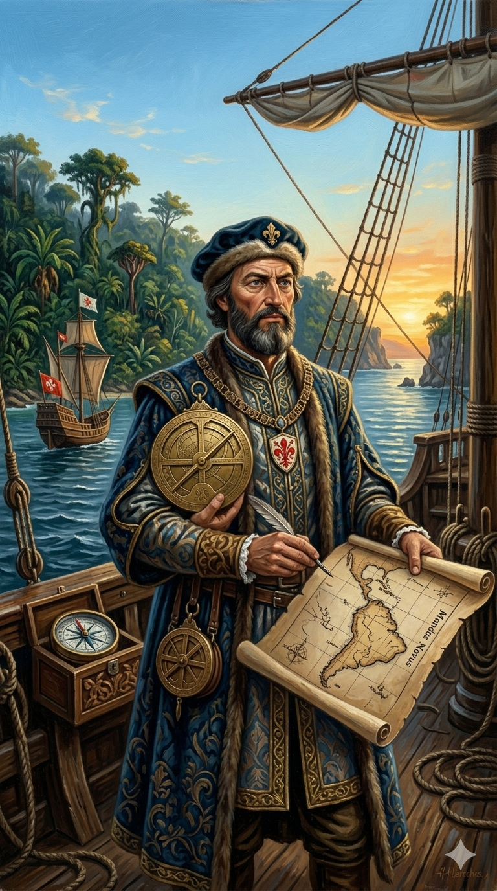

אמריגו וספוצ'י

לחץ על התמונה להגדלה
מקור ומשמעות השם המלא (אטימולוגיה)
שם פרטי: אמריגו (Amerigo)
השם "אמריגו" הוא הגרסה האיטלקית לשם הגרמאני העתיק Emmerich (אמריך) או Amalric (אמלריק). בלטינית הוא נכתב כ-Americus.
פירוש מילולי: השם מורכב משני שורשים גרמאניים: "Amal" (עבודה, עמל או גבורה) ו-"Ric" (שליט, כוח). המשמעות היא "שליט העבודה" או "מנהיג חרוץ".
האירוניה ההיסטורית: יבשת אמריקה (שנקראת על שמו) נושאת למעשה שם שמקורו בשבטים גרמאניים עתיקים מאירופה, שמשמעותו קשורה לכוח ועבודה.
שם משפחה: וספוצ'י (Vespucci)
שם המשפחה "וספוצ'י" נגזר מהמילה הלטינית/איטלקית "Vespa" שפירושה צִרְעָה (Wasp).
הקשר היסטורי: משפחת וספוצ'י הייתה משפחת אצולה עשירה ומכובדת בפירנצה, וסמל האצולה (שלט האצילים) של המשפחה כלל ציור של צרעות. זהו שם שמעיד על עוקצנות, הגנה על הטריטוריה, וחריצות.
ילדות בפירנצה, דיפלומטיה בפריז וקריפטוגרפיה
אמריגו וספוצ'י נולד וגדל בלב ליבה של תקופת הרנסנס: פירנצה של שנת 1451 (באותה שנה בה נולד קולומבוס). הוא קיבל חינוך עילאי מדודו, הנזיר הדומיניקני ג'ורג'ו אנטוניו וספוצ'י, שהקנה לו ידע נרחב בפיזיקה, גיאומטריה ואסטרונומיה.
בתקופה זו למד וספוצ'י קריפטוגרפיה (תורת ההצפנה). פירנצה נזקקה להעברת מידע פוליטי וכלכלי רגיש מבלי שמרגלים צרפתים יקראו אותו. וספוצ'י הוכשר ליצור ולפענח צפנים מורכבים (Ciphers). כישורים אלו ישרתו אותו נאמנה בהמשך חייו, כאשר יבריח מידע קרטוגרפי סודי מספרד חזרה למפעיליו במשפחת מדיצ'י (Medici) העוצמתית.
המוניטין בספרד: איש הלוגיסטיקה של קולומבוס
לפני שהפליג בעצמו, וספוצ'י היה מוכר היטב באליטה האירופית כבנקאי בכיר. בסוף שנות ה-80 של המאה ה-15, הוא נשלח כנציג בנק מדיצ'י לסביליה שבספרד. שם הפך וספוצ'י לקבלן הלוגיסטי (Ship chandler) הראשי של הצי הספרדי.
הוא זה שמימן, צייד, סיפק מזון וציוד לספינותיו של כריסטופר קולומבוס לקראת מסעותיו השני והשלישי לאמריקה. תפקיד מפתח זה העניק לוספוצ'י גישה ישירה ובלתי אמצעית למפות הסודיות ביותר של קולומבוס ולתגליות טריות מהשטח. המפגש עם המידע הזה, בגיל מבוגר יחסית (סביב 48), הוא שהצית בו את הסקרנות המדעית לצאת אל הים בעצמו.
אידאולוגיה ומניעים (מדע מול זהב)
המניעים של וספוצ'י היו שונים בתכלית מאלו של בני דורו (כמו דה גאמה או קורטס). הוא לא חיפש תהילה צבאית.
המניע המדעי-אסטרונומי: וספוצ'י הונע מסקרנות אינטלקטואלית טהורה. הוא רצה למדוד קווי אורך ורוחב במדויק. הוא בילה לילות שלמים בתצפיות על כוכבי חצי הכדור הדרומי כדי לשפר את שיטות הניווט. הוא נסע כנווט, אסטרונום ומשקיף, ולא כמפקד צבאי עליון.
המניע העסקי: כנציג מסחרי הוא רצה לברר סופית – האם הארצות הללו הן אכן אסיה כפי שקולומבוס טען? ואם כן, היכן נמצאות סחורות העושר (התבלינים)?
משבר 1500, התיווך והעריקה לפורטוגל
המסע המכריע ביותר של וספוצ'י קשור ל"גניבת טאלנטים" בינלאומית. לאחר מסעו הראשון (ב-1499 עם הספרדי אלונסו דה אוחדה), וספוצ'י חזר לספרד מאוכזב מהתגמול הכלכלי ומסירובם לממן לו מסע דרומה (ספרד התעניינה בחיפוש זהב בקריביים).
הוא פנה לבנקאים האיטלקים שמימנו את מסעותיו בליסבון, ובראשם ברתולומאו מרקיוני (חלק מרשת מדיצ'י). מרקיוני המליץ מיד על בן-עירו, וספוצ'י. לאור התסכול שלו מספרד וההצעה הפורטוגלית למימון מלא, וספוצ'י ערק לפורטוגל בחשאי ב-1501 – מהלך שנתפס כבגידה עסקית עצומה בעיני הספרדים.
המסעות: ההבנה של "העולם החדש"
וספוצ'י טען במכתביו שיצא לארבעה מסעות, אך חוקרים מודרניים מאמתים בוודאות שניים מרכזיים:
במסע זה "נפל האסימון". וספוצ'י הבין ששום אי או חצי-אי באסיה לא יכול להיות עצום כל כך ולהימשך כה רחוק אל תוך קווי הרוחב הדרומיים. הוא הסיק כי זו לא הודו או סין כפי שהתעקש קולומבוס (שמסעו התמקד בקריביים), אלא מסת יבשה אדירה ובלתי מוכרת לאירופאים – יבשת חדשה לחלוטין.
השפעות היסטוריות: כיצד אמריקה קיבלה את שמה
תגליתו המרכזית של וספוצ'י הייתה שינוי הפרדיגמה המחשבתית של אירופה.
וספוצ'י זכה להכרה עליונה, ומונה בשנת 1508 ל"נווט הראשי" (Piloto Mayor) של ספרד – התפקיד הממשלתי הבכיר ביותר לאישור מפות, עד מותו ב-1512.
מקורות וביבליוגרפיה (אימות מחקר)
- "מונדוס נובוס" (Mundus Novus): המכתב המפורסם (1504) בו נטבע המונח "העולם החדש".
- מפת העולם של וולדזמילר (1507): המפה הראשונה המפרידה את אמריקה מאסיה, והראשונה בה מופיע השם "AMERICA".
- מחקר ביוגרפי - פליפה פרננדס-ארמסטו: Fernández-Armesto, F. (2007). Amerigo: The Man Who Gave His Name to America. (מתאר בפירוט את הכשרתו כדיפלומט בפריז ואת קשריו עם מרקיוני).
- מכתבים מוצפנים: Formisano, L. (1992). Letters from a New World (הוכחות היסטוריות לשימוש שעשה בקריפטוגרפיה למשלוח דיווחים לבנק מדיצ'י).